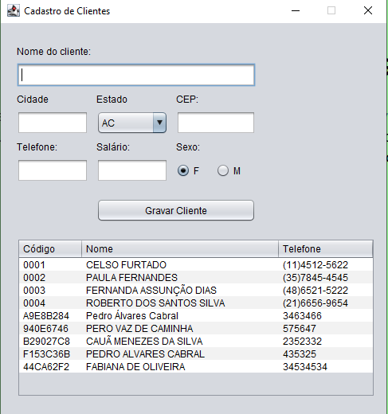

Desenvolvimento de Sistemas
FPOO
Fundamentos da Programação Orientada a Objetos
Nessa matéria, você irá se aprofundar em orientação a objeto e na linguagem Java. Aprenderá conceitos essenciais como: variáveis, dados numéricos, textuais, conversões entre tipos de dados, métodos, classes, operações boolianas, loops, aprenderá a instaciar objetos, vetores e arrays, a criar interfaces gráficas, além de gravar e ler dados dados em um arquivo local, assim como realizamos na imagem ao lado.
Introdução ao Java
Neste vídeo, você será apresentado a linguagem Java, a uma IDE, que significa: "Ambiente de desenvolvimento integrado", na tradução livre, mais especificamente ao Eclipse, e ao básico do desenvolvimento e lógica de programação.
LIMA
Linguagens de Marcação
Em linguagens de marcação, você aprenderá a utilizar HTML e CSS para personalizar páginas web, bem como aprender a aplicar suas propriedades mais utilizadas. Alguns exemplos seriam: o corpo da página, header, main, footer (HTML); seletores e display flex (CSS), e muito mais!
Criação de páginas web
Com essa disciplina, você será capaz de criar e estilizar páginas web assim como a da imagem à esquerda. No vídeo à direita, será apresentada uma introdução ao conteúdo dessa matéria, com a estruturação básica de um documento em HTML5.
SOP
Sistemas Operacionais
Em sistemas operacionais, você aprenderá sobre a história dos computadores, o início da informática e de grandes empresas como Apple e Microsoft. Também se aprofundará na instalação de sistemas operacionais, dual boot, terminal e estudará as principais características e funções dos sistemas dominantes (Windows, Linux e MacOS). Por fim, você aprenderá o básico sobre Pacote Office (Word, Excel e PowerPoint), sendo que em Excel, você irá estudar a criação de planilhas, entradas de dados, textos, fórmulas e funções.
A história dos computadores
Este vídeo aborda, de forma detalhada, a evolução dos computadores, desde o surgimento da primeira máquina, na década de 1950, até os modelos mais atuais e modernos.
Instalação de um sistema operacional
Neste vídeo, eu realizei a instalação do sistema operacional Windows XP em uma máquina virtual. Características da máquina criada: 2GB de memória RAM, 50GB de HD e arquitetura de 64-bit.
Funções do Excel
Com este vídeo, você aprenderá a utilizar as funções soma, média, máximo e mínimo do Excel.
HARE
Hardware
Com a matéria de hardware e redes, você será capaz de montar computadores assim como na imagem ao lado. Também estudará as funções de cada componente nele presente.
BIOS
Além de ser capaz de montar e ter conhecimento das funções dos componentes dos computadores, você será capaz de entrar e configurar a BIOS da placa-mãe conforme desejar, assim como mostra a imagem.
Endereço IP
Na matéria de redes você também terá conhecimento sobre endereçamento IP, e saberá diferenciar um IP público de um IP privado, um IP de rede de um IP de broadcast, e muito mais. Esse vídeo introduz o conceito de endereçamento IP, explicando o significado do mesmo.